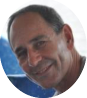
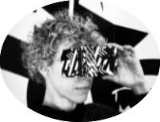
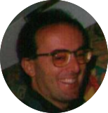
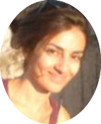
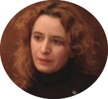
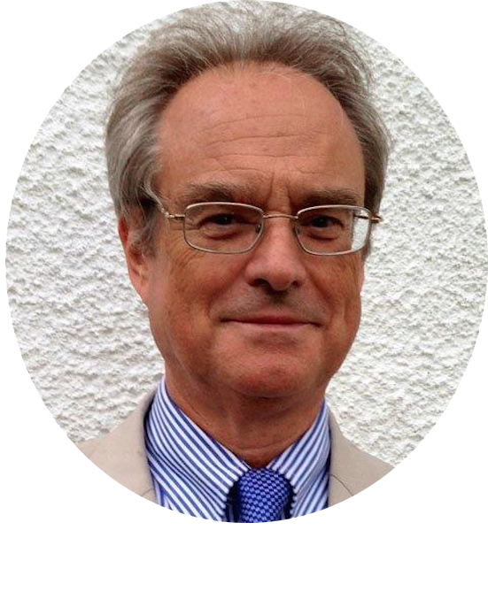
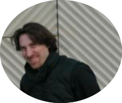
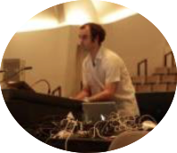
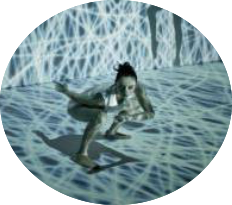

Speakers
Key-Note Invited Speaker
Philip Barnard, cognitive psychologist
Philip Barnard is a cognitive psychologist whose scientific studies were focused on real-world problems associated with mental health issues and technology design. He currently concentrates on Sci-Art collaborations. He worked for the UK Medical Research Council’s Cognition and Brain Sciences Unit (CBSU) in Cambridge from 1972 to 2011, where he carried out basic research on how memory, attention, language, body states and emotion work together. He has published over 200 articles three books. He is now retired but remains a visiting researcher with the CBSU. Since 2003, he has been collaborating with Wayne McGregor | Random Dance (now re-named Studio Wayne McGregor) to develop productive synergies between choreographic processes and our knowledge of cognitive neuroscience.
WhoLoDancE workshop speakers

Jean-Marc MATOS, choreographer
Dancer, choreographerand artistic director of the CompagnieK. Danse. Trained at the Cunningham Studio in New-York, he has performed with David Gordon (Judson Church). He is interested in the impact of digital technology on society, in order to develop a meaningful relationship between dance and new media. He has choreographed more than 45 pieces which have been presented extensively in France (Avignon Festival, the Pompidou Center, etc.) and in many countries (Europe, Central and South America, USA, Canada, North Africa, India, Pakistan).The choreographic approach of the K. Danse
develops a contemporary movement language by the dialectic confrontation between the physical body (lived, experienced) and the visual body (seen, virtual). The performances question the borders between fiction and reality, the social construction of the body, and the psychological structures in human relationships. They investigate various digital technologies for the making of interactive immersive installations, performances integrating visual design and digital scenography, interactive real time image- sound environments, reactive costumes and augmented tactility, physiological sensors, semi-autonomous objects and interactive tracking, body sensors, interactive 3D and motion capture, telepresence via internet. The company develops four main areas of activity: performance making, pedagogical activities, art-science research, and organization of events. www.k-danse.net

Ruth Gibson, visual artist and choreographer
Ruth Gibson works across disciplines to produce objects, software and installations in partnership with artist Bruno Martelli. She exhibits in galleries and museums internationally creating award- winning projects using computer games, virtual reality, print and video. A Senior Research Fellow in the Centre for Dance Research, Ruth investigates and creates new performance spaces using
digital technology. Her commitment to the field of interdisciplinary and collaborative research was recognised in 2010 when she was awarded a three year Arts and Humanities Research Council (AHRC) Creative Fellowship to examine image interpretation through motion capture, dance and computer visualisation. She has received numerous awards including a National Endowment for Technology and the Arts (NESTA) Innovation Award for SwanQuake and a Henry Moore Foundation New Commission forVISITOR. Her first work with Martelli Windowsninetyeight won a British Academy of Film and Television Award (BAFTA) nomination for Interactive Art. More recently she won the Lumen Prize for MAN A, an augmented reality project.Ruth has worked as a motion capture performer, supervisor and advisor for Vicon, Motek, Animazoo, Televirtual and for the BBC. Skinner Releasing Technique underpins her practice, she is a certified SRT teacher and combines the technique with her performance technology research.

Antonio Camurri, HCI researcher
Antonio holds a PhD in Computer Engineering, full professor at University of Genova where he teaches human computer interaction. His research interests include multimodal interfaces and interactive systems, kansei information processing, computational models of non-verbal multimodal expressive gesture, emotion, and social signals, and multimodal systems for theatre, music, dance, museums, therapy and rehabilitation. Founder and scientific director of InfoMus Lab and of Casa Paganini - InfoMus Research Centre (www.infomus.org) at
University of Genoa, member of the Executive Committee of the IEEE CS TC on Computer Generated Music, founding member of the Italian Association for Artificial Intelligence, Associate Editor of Journal of New Music Research (Taylor & Francis); author of more than 150 publications in international scientific journals and conferences. Coordinator and principal investigator in EU projects (IST FP5 and FP6, ICT FP7, H2020, Culture, Erasmus Intensive programs, Cost Action, CRAFT), co-owner of patents on software systems, and responsible for University of Genoa of industry contracts. He is currently Coordinator of the EU Horizon 2020 ICT Project DANCE (dance.dibris.unige.it). Web: www.casapaganini.org.

Katerina El Raheb, ICT researcher, dancer
Katerina is a member of the Research and Development staff of MADgIK group at Athena-Research and Innovation Center in Information, Communication and Knowledge Technologies. As a research member of the team she has worked for several EU-funded interdisciplinary projects related to Digital Libraries, Data Research Infrastructures, and ICT for Cultural Heritage. She completes her PhD on Semantic Representation Analysis and Search for Dance and assists in teaching Human Computer Interaction at the Department of Informatics and Telecommunications, University of Athens. She holds a MSc. in Advanced Information Systems the same department, a BSc. in Ch. Engineering from the National Technical University of Athens. As a dance practitioner she is trained in different forms of dance, holds a Diploma from N. Kontaxaki Higher Professional Dance School for classic and contemporary dance, and has collaborated with various dance theater companies in Greece.

Vivi Katifori: ICT researcher
Vivi Katifori is a researcher in information visualization, profiling and personalization, interactive digital storytelling, and human-computer interaction. She holds a PhD degree (her dissertation titled “An intelligent system for managing historical archive documents”), an M.Sc. in Signal Processing for Telecommunications and Multimedia (2003), and a B.Sc. in Informatics and Telecommunications (2000), all from the University of Athens. She works as a researcher in the Management of Data, Information, and
Knowledge Group, in Athena Research Center. Dr Katifori has participated in several EU and national RTD projects since 1999, mostly in the areas of virtual museums and digital libraries, working initially as a programmer and later as an analyst and designer as well as a project manager. She has authored several papers in different research areas of computer science.
Recently (2011-2014), Dr. Katifori worked on the user interface and interaction design, authoring, and usability and user experience evaluation of the CHESS project (http://www.chessexperience.eu/) and she is currently a member of the Wholodance project team.

Edwin Morley-Fletcher
Edwin Morley-Fletcher is the founder of Lynkeus, an independent strategy consultancy, which works to identify and promote cutting-edge technological solutions to complex socio-economic problems in a variety of areas. He has been former Professor of Administration Science and of Public Policy at the Faculty of Politics, University of Rome “La Sapienza”, and was chairman of the Welfare Market Committee within the Italian National Council for Economy and Labour (CNEL). Edwin was also Senior Fellow at the School of Public Policy at the UCLA and former Jean Monnet Fellow at the EUI.
He has coordinated and managed a number of EU Funded Projects such as Health-e-Child (2006-2010), Sim-e-Child (2010-2012), MD-Paedigree (2013-2017), Cardioproof (2013-2016). Edwin has additionally played a key role in Avicenna (2013-2015), and most recently he is coordinator of WhoLoDancE (2016-2018), a research and innovation action funded under H2020, which aims to make use of Motion Capture Technology and advanced visualization tools such as Holographic Projections, to preserve the European cultural heritage while providing innovative solutions for Dance teaching and choreographing.
Workshop Demos

Daniel Bisig, researcher and artist
Daniel Bisig holds a Master's and PhD degree in Natural Sciences. He is active as a researcher and artist in the fields of artificial intelligence and generative art. He has worked as a researcher at the Institute for Biochemistry at the Swiss Federal Institute of Technology and the the Artificial Intelligence Laboratory of the University of Zurich. He is currently employed as a senior research associate at the Institute for Computer Music and Sound Technology ICST of the Zurich University of the Arts. As part of his artistic activities, he has realized algorithmic films, interactive installations and audiovisual performances, some of them in collaboration with musicians and choreographers. The derivation of generative algorithms and interaction techniques from biomimetic simulations forms a central.

Pablo Palacio, independent compose
His work has been focused on the transformation and perceptual connections of sonic images. He created with Muriel Romero Instituto Stocos, a project focused on the analysis and development of the interaction between body gesture and sonic gesture, integrate in a performative context abstractions taken from other disciplines such as artificial intelligence, biology, mathematics or experimental psychology. He has held residences in Spain, Switzerland, Germany and Lebanon. His pieces have been performed in many countries from Europe and United States to China, India, Brazil, or North Africa, and edited by the label Sub Rosa in Anthology of Noise and Electronic Music. He is also an active composer for dance and performing arts receiving designing interactive musical instruments for people with disabilities. He also divulges new perspectives and technologies in sound composition through publications, workshops, and talks in several conservatories, universities and institutions and he is currently co-organising the European project Metabody.

Muriel Romero, dancer and choreographer
Her work is currently focused on the investigation of generative choregraphic structures and the incorporation of abstractions taken from other disciplines such as music or mathematics. With her company Instituto Stocos, she has created several choreographies blending interactive sonic extensions and visual imagery with body movement. Some of these works are Acusmatrix, Catexis, Stocos, Neural Narratives1: Phantom Limb and Neural Narratives2: Polytopya. She has won several international prizes such as Moscow International Ballet Competition, Prix de la Fondation de Paris-Prix de Laussane and Premio Nacional de Danza. She’s been first soloist in some the most prestigious companies around the world including Deutsche Oper Berlin, Dresden Semper Oper Ballet, Bayerisches Staatsballet Munchen, Gran Théatre de Genéve o Compañia Nacional de Danza. During her trayectory she’s worked with some choregraphers of our time like W. Forsythe, J. Kylian, Ohad Naharin or Saburo Teshigawara. She teaches at the Professional Conservatory of Madrid.